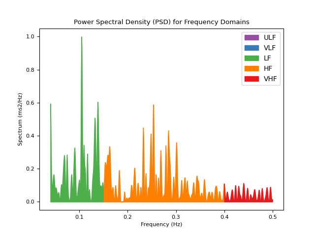
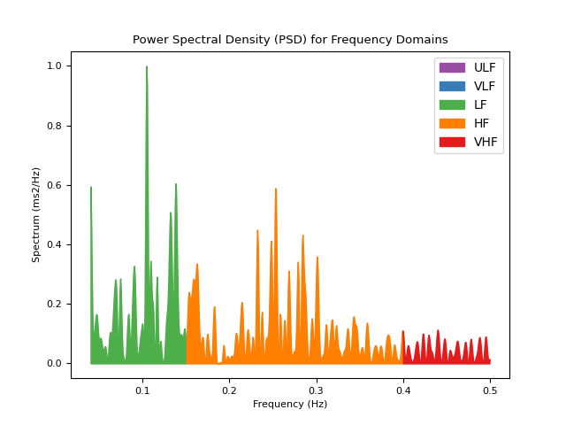
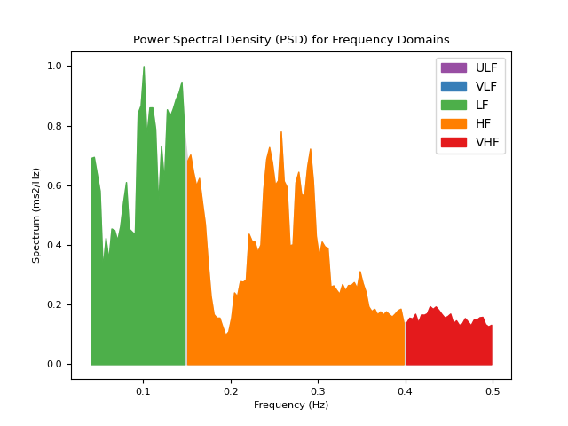
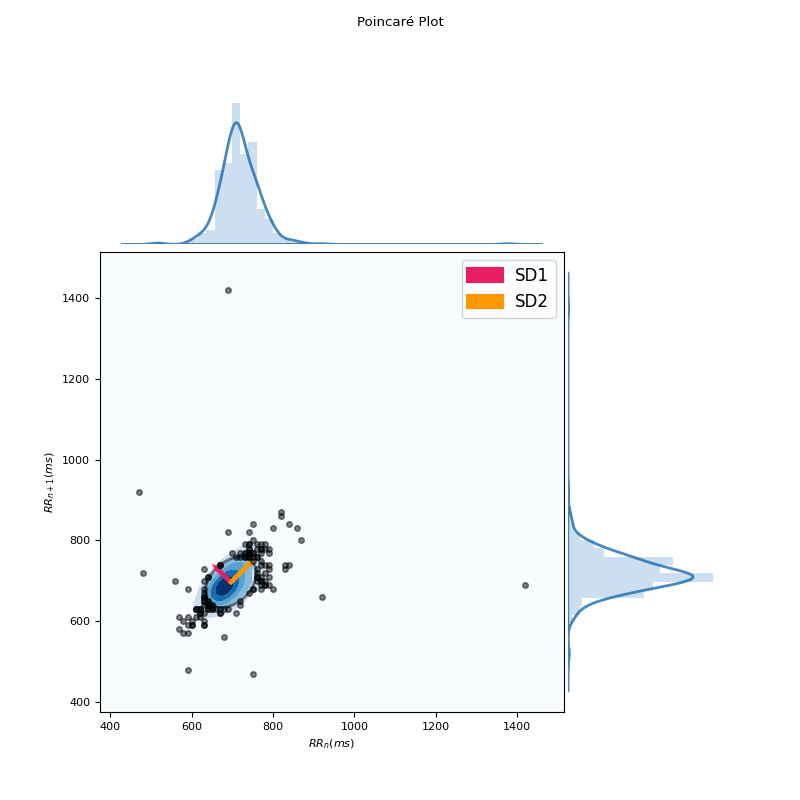
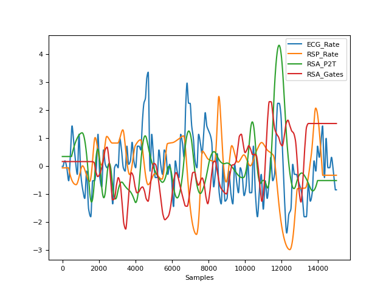
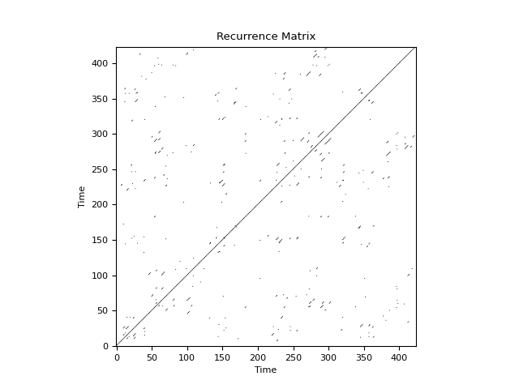
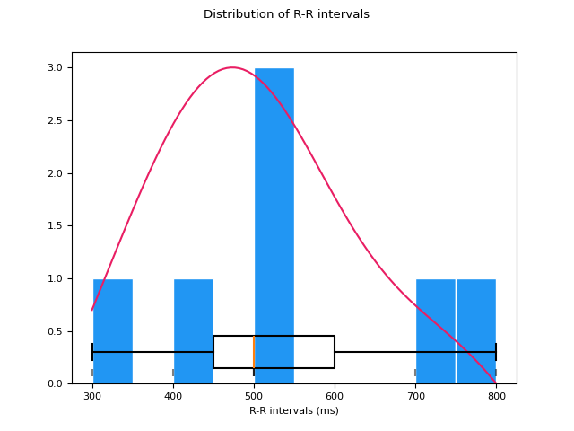

HRV#
Main#
hrv()#
- hrv(peaks, sampling_rate=1000, show=False, **kwargs)[source]#
Heart Rate Variability (HRV)
This function computes all HRV indices available in NeuroKit. It is essentially a convenience function that aggregates results from the
time domain,frequency domain, andnon-linear domain.Tip
We strongly recommend checking our open-access paper Pham et al. (2021) on HRV indices as well as Frasch (2022) for more information.
- Parameters:
peaks (dict) – Samples at which R-peaks occur. Can be a list of indices or the output(s) of other functions such as
ecg_peaks(),ppg_peaks(),ecg_process()orbio_process(). Can also be a dict containing the keys RRI and RRI_Time to directly pass the R-R intervals and their timestamps, respectively.sampling_rate (int, optional) – Sampling rate (Hz) of the continuous cardiac signal in which the peaks occur. Should be at least twice as high as the highest frequency in vhf. By default 1000.
show (bool, optional) – If
True, returns the plots that are generated for each of the domains.
- Returns:
DataFrame – Contains HRV indices in a DataFrame. If RSP data was provided (e.g., output of
bio_process()), RSA indices will also be included.
See also
hrv_time,hrv_frequency,hrv_nonlinear,hrv_rsa,ecg_peaks,ppg_peaksExamples
Example 1: Only using a list of R-peaks locations
In [1]: import neurokit2 as nk In [2]: import matplotlib.pyplot as plt In [3]: plt.rc('font', size=8) # Download data In [4]: data = nk.data("bio_resting_5min_100hz") # Clean signal and Find peaks In [5]: ecg_cleaned = nk.ecg_clean(data["ECG"], sampling_rate=100) In [6]: peaks, info = nk.ecg_peaks(ecg_cleaned, sampling_rate=100, correct_artifacts=True) # Compute HRV indices In [7]: hrv_indices = nk.hrv(peaks, sampling_rate=100, show=True)

Example 2: Compute HRV directly from processed data
# Download data In [8]: data = nk.data("bio_resting_5min_100hz") # Process In [9]: signals, info = nk.bio_process(data, sampling_rate=100) # Get HRV In [10]: nk.hrv(signals, sampling_rate=100) Out[10]: HRV_MeanNN HRV_SDNN ... RSA_Gates_Mean_log RSA_Gates_SD 0 694.756381 49.036043 ... 2.045955 0.156187 [1 rows x 99 columns]
References
Pham, T., Lau, Z. J., Chen, S. H. A., & Makowski, D. (2021). Heart Rate Variability in Psychology: A Review of HRV Indices and an Analysis Tutorial. Sensors, 21(12), 3998. https://doi.org/10.3390/s21123998
Frasch, M. G. (2022). Comprehensive HRV estimation pipeline in Python using Neurokit2: Application to sleep physiology. MethodsX, 9, 101782.
Stein, P. K. (2002). Assessing heart rate variability from real-world Holter reports. Cardiac electrophysiology review, 6(3), 239-244.
Shaffer, F., & Ginsberg, J. P. (2017). An overview of heart rate variability metrics and norms. Frontiers in public health, 5, 258.
Sub-domains#
hrv_time()#
- hrv_time(peaks, sampling_rate=1000, show=False, **kwargs)[source]#
Computes time-domain indices of Heart Rate Variability (HRV)
Time-domain measures reflect the total variability of HR and are relatively indiscriminate when it comes to precisely quantifying the respective contributions of different underlying regulatory mechanisms. However, this “general” sensitivity can be seen as a positive feature (e.g., in exploratory studies or when specific underlying neurophysiological mechanisms are not the focus). Moreover, as they are easy to compute and interpret, time-domain measures are still among the most commonly reported HRV indices.
The time-domain indices can be categorized into deviation-based and difference-based indices where the formal are calculated directly from the normal beat-to-beat intervals (normal RR intervals or NN intervals), and the later are derived from the difference between successive NN intervals.
Tip
We strongly recommend checking our open-access paper Pham et al. (2021) on HRV indices for more information.
- Parameters:
peaks (dict) – Samples at which cardiac extrema (i.e., R-peaks, systolic peaks) occur. Can be a list of indices or the output(s) of other functions such as
ecg_peaks(),ppg_peaks(),ecg_process()orbio_process(). Can also be a dict containing the keys RRI and RRI_Time to directly pass the R-R intervals and their timestamps, respectively.sampling_rate (int, optional) – Sampling rate (Hz) of the continuous cardiac signal in which the peaks occur. Should be at least twice as high as the highest frequency in vhf. By default 1000.
show (bool) – If
True, will plot the distribution of R-R intervals.
- Returns:
DataFrame – Contains time domain HRV metrics:
MeanNN: The mean of the RR intervals.
SDNN: The standard deviation of the RR intervals.
SDANN1, SDANN2, SDANN5: The standard deviation of average RR intervals extracted from n-minute segments of time series data (1, 2 and 5 by default). Note that these indices require a minimal duration of signal to be computed (3, 6 and 15 minutes respectively) and will be silently skipped if the data provided is too short.
SDNNI1, SDNNI2, SDNNI5: The mean of the standard deviations of RR intervals extracted from n-minute segments of time series data (1, 2 and 5 by default). Note that these indices require a minimal duration of signal to be computed (3, 6 and 15 minutes respectively) and will be silently skipped if the data provided is too short.
RMSSD: The square root of the mean of the squared successive differences between adjacent RR intervals. It is equivalent (although on another scale) to SD1, and therefore it is redundant to report correlations with both (Ciccone, 2017).
SDSD: The standard deviation of the successive differences between RR intervals.
CVNN: The standard deviation of the RR intervals (SDNN) divided by the mean of the RR intervals (MeanNN).
CVSD: The root mean square of successive differences (RMSSD) divided by the mean of the RR intervals (MeanNN).
MedianNN: The median of the RR intervals.
MadNN: The median absolute deviation of the RR intervals.
MCVNN: The median absolute deviation of the RR intervals (MadNN) divided by the median of the RR intervals (MedianNN).
IQRNN: The interquartile range (IQR) of the RR intervals.
SDRMSSD: SDNN / RMSSD, a time-domain equivalent for the low Frequency-to-High Frequency (LF/HF) Ratio (Sollers et al., 2007).
Prc20NN: The 20th percentile of the RR intervals (Han, 2017; Hovsepian, 2015).
Prc80NN: The 80th percentile of the RR intervals (Han, 2017; Hovsepian, 2015).
pNN50: The percentage of absolute differences in successive RR intervals greater than 50 ms (Bigger et al., 1988; Mietus et al., 2002).
pNN20: The percentage of absolute differences in successive RR intervals greater than 20 ms (Mietus et al., 2002).
MinNN: The minimum of the RR intervals (Parent, 2019; Subramaniam, 2022).
MaxNN: The maximum of the RR intervals (Parent, 2019; Subramaniam, 2022).
TINN: A geometrical parameter of the HRV, or more specifically, the baseline width of the RR intervals distribution obtained by triangular interpolation, where the error of least squares determines the triangle. It is an approximation of the RR interval distribution.
HTI: The HRV triangular index, measuring the total number of RR intervals divided by the height of the RR intervals histogram.
See also
ecg_peaks,ppg_peaks,hrv_frequency,hrv_summary,hrv_nonlinearExamples
In [1]: import neurokit2 as nk # Download data In [2]: data = nk.data("bio_resting_5min_100hz") # Find peaks In [3]: peaks, info = nk.ecg_peaks(data["ECG"], sampling_rate=100) # Compute HRV indices In [4]: hrv = nk.hrv_time(peaks, sampling_rate=100, show=True)
References
Bigger Jr, J. T., Kleiger, R. E., Fleiss, J. L., Rolnitzky, L. M., Steinman, R. C., & Miller, J. P. (1988). Components of heart rate variability measured during healing of acute myocardial infarction. The American journal of cardiology, 61(4), 208-215.
Pham, T., Lau, Z. J., Chen, S. H. A., & Makowski, D. (2021). Heart Rate Variability in Psychology: A Review of HRV Indices and an Analysis Tutorial. Sensors, 21(12), 3998. https://doi.org/10.3390/s21123998
Ciccone, A. B., Siedlik, J. A., Wecht, J. M., Deckert, J. A., Nguyen, N. D., & Weir, J. P. (2017). Reminder: RMSSD and SD1 are identical heart rate variability metrics. Muscle & nerve, 56(4), 674-678.
Han, L., Zhang, Q., Chen, X., Zhan, Q., Yang, T., & Zhao, Z. (2017). Detecting work-related stress with a wearable device. Computers in Industry, 90, 42-49.
Hovsepian, K., Al’Absi, M., Ertin, E., Kamarck, T., Nakajima, M., & Kumar, S. (2015). cStress: towards a gold standard for continuous stress assessment in the mobile environment. In Proceedings of the 2015 ACM international joint conference on pervasive and ubiquitous computing (pp. 493-504).
Mietus, J. E., Peng, C. K., Henry, I., Goldsmith, R. L., & Goldberger, A. L. (2002). The pNNx files: re-examining a widely used heart rate variability measure. Heart, 88(4), 378-380.
Parent, M., Tiwari, A., Albuquerque, I., Gagnon, J. F., Lafond, D., Tremblay, S., & Falk, T. H. (2019). A multimodal approach to improve the robustness of physiological stress prediction during physical activity. In 2019 IEEE International Conference on Systems, Man and Cybernetics (SMC) (pp. 4131-4136). IEEE.
Stein, P. K. (2002). Assessing heart rate variability from real-world Holter reports. Cardiac electrophysiology review, 6(3), 239-244.
Shaffer, F., & Ginsberg, J. P. (2017). An overview of heart rate variability metrics and norms. Frontiers in public health, 5, 258.
Subramaniam, S. D., & Dass, B. (2022). An Efficient Convolutional Neural Network for Acute Pain Recognition Using HRV Features. In Proceedings of the International e-Conference on Intelligent Systems and Signal Processing (pp. 119-132). Springer, Singapore.
Sollers, J. J., Buchanan, T. W., Mowrer, S. M., Hill, L. K., & Thayer, J. F. (2007). Comparison of the ratio of the standard deviation of the RR interval and the root mean squared successive differences (SD/rMSSD) to the low frequency-to-high frequency (LF/HF) ratio in a patient population and normal healthy controls. Biomed Sci Instrum, 43, 158-163.
{kind=link}
hrv_frequency()#
- hrv_frequency(peaks, sampling_rate=1000, ulf=(0, 0.0033), vlf=(0.0033, 0.04), lf=(0.04, 0.15), hf=(0.15, 0.4), vhf=(0.4, 0.5), psd_method='welch', show=False, silent=True, normalize=True, order_criteria=None, interpolation_rate=100, **kwargs)[source]#
Computes frequency-domain indices of Heart Rate Variability (HRV)
Computes frequency domain HRV metrics, such as the power in different frequency bands.
ULF: The spectral power of ultra low frequencies (by default, .0 to .0033 Hz). Very long signals are required for this to index to be extracted, otherwise, will return NaN.
VLF: The spectral power of very low frequencies (by default, .0033 to .04 Hz).
LF: The spectral power of low frequencies (by default, .04 to .15 Hz).
HF: The spectral power of high frequencies (by default, .15 to .4 Hz).
VHF: The spectral power of very high frequencies (by default, .4 to .5 Hz).
TP: The total spectral power.
LFHF: The ratio obtained by dividing the low frequency power by the high frequency power.
LFn: The normalized low frequency, obtained by dividing the low frequency power by the total power.
HFn: The normalized high frequency, obtained by dividing the low frequency power by the total power.
LnHF: The log transformed HF.
Note that a minimum duration of the signal containing the peaks is recommended for some HRV indices to be meaningful. For instance, 1, 2 and 5 minutes of high quality signal are the recommended minima for HF, LF and LF/HF, respectively.
Tip
We strongly recommend checking our open-access paper Pham et al. (2021) on HRV indices for more information.
- Parameters:
peaks (dict) – Samples at which cardiac extrema (i.e., R-peaks, systolic peaks) occur. Can be a list of indices or the output(s) of other functions such as
ecg_peaks(),ppg_peaks(),ecg_process()orbio_process(). Can also be a dict containing the keys RRI and RRI_Time to directly pass the R-R intervals and their timestamps, respectively.sampling_rate (int, optional) – Sampling rate (Hz) of the continuous cardiac signal in which the peaks occur.
ulf (tuple, optional) – Upper and lower limit of the ultra-low frequency band. By default (0, 0.0033).
vlf (tuple, optional) – Upper and lower limit of the very-low frequency band. By default (0.0033, 0.04).
lf (tuple, optional) – Upper and lower limit of the low frequency band. By default (0.04, 0.15).
hf (tuple, optional) – Upper and lower limit of the high frequency band. By default (0.15, 0.4).
vhf (tuple, optional) – Upper and lower limit of the very-high frequency band. By default (0.4, 0.5).
psd_method (str) – Method used for spectral density estimation. For details see
signal_power(). By default"welch".silent (bool) – If
False, warnings will be printed. Default toTrue.show (bool) – If
True, will plot the power in the different frequency bands.normalize (bool) – Normalization of power by maximum PSD value. Default to
True. Normalization allows comparison between different PSD methods.order_criteria (str) – The criteria to automatically select order in parametric PSD (only used for autoregressive (AR) methods such as
"burg"). Defaults toNone.interpolation_rate (int, optional) – Sampling rate (Hz) of the interpolated interbeat intervals. Should be at least twice as high as the highest frequency in vhf. By default 100. To replicate Kubios defaults, set to 4. To not interpolate, set interpolation_rate to None (in case the interbeat intervals are already interpolated or when using the
"lombscargle"psd_method for which interpolation is not required).**kwargs – Additional other arguments.
- Returns:
DataFrame – DataFrame consisting of the computed HRV frequency metrics, which includes:
HRV_ULF: The spectral power of ultra low frequencies (by default, .0 to .0033 Hz). Very long signals are required for this to index to be extracted, otherwise, will return NaN.HRV_VLF: The spectral power of very low frequencies (by default, .0033 to .04 Hz).HRV_LF: The spectral power of low frequencies (by default, .04 to .15 Hz).HRV_HF: The spectral power of high frequencies (by default, .15 to .4 Hz).HRV_VHF: The spectral power of very high frequencies (by default, .4 to .5 Hz).HRV_TP: The total spectral power.HRV_LFHF: The ratio obtained by dividing the low frequency power by the high frequency power.HRV_LFn: The normalized low frequency, obtained by dividing the low frequency power by the total power.HRV_HFn: The normalized high frequency, obtained by dividing the low frequency power by the total power.HRV_LnHF: The log transformed HF.
See also
ecg_peaks,ppg_peaks,hrv_summary,hrv_time,hrv_nonlinearExamples
In [1]: import neurokit2 as nk # Download data In [2]: data = nk.data("bio_resting_5min_100hz") # Find peaks In [3]: peaks, info = nk.ecg_peaks(data["ECG"], sampling_rate=100) # Compute HRV indices using method="welch" In [4]: hrv_welch = nk.hrv_frequency(peaks, sampling_rate=100, show=True, psd_method="welch")

# Using method ="burg" In [5]: hrv_burg = nk.hrv_frequency(peaks, sampling_rate=100, show=True, psd_method="burg")
 
# Using method = "lomb" (requires installation of astropy) In [6]: hrv_lomb = nk.hrv_frequency(peaks, sampling_rate=100, show=True, psd_method="lomb")
# Using method="multitapers" In [7]: hrv_multitapers = nk.hrv_frequency(peaks, sampling_rate=100, show=True,psd_method="multitapers")
References
Pham, T., Lau, Z. J., Chen, S. H. A., & Makowski, D. (2021). Heart Rate Variability in Psychology: A Review of HRV Indices and an Analysis Tutorial. Sensors, 21(12), 3998.
Stein, P. K. (2002). Assessing heart rate variability from real-world Holter reports. Cardiac electrophysiology review, 6(3), 239-244.
Shaffer, F., & Ginsberg, J. P. (2017). An overview of heart rate variability metrics and norms. Frontiers in public health, 5, 258.
Boardman, A., Schlindwein, F. S., & Rocha, A. P. (2002). A study on the optimum order of autoregressive models for heart rate variability. Physiological measurement, 23(2), 325.
Bachler, M. (2017). Spectral Analysis of Unevenly Spaced Data: Models and Application in Heart Rate Variability. Simul. Notes Eur., 27(4), 183-190.
{kind=link}
{kind=link}
hrv_nonlinear()#
- hrv_nonlinear(peaks, sampling_rate=1000, show=False, **kwargs)[source]#
Nonlinear indices of Heart Rate Variability (HRV)
This function computes non-linear indices, which include features derived from the Poincaré plot, as well as other
complexity()indices corresponding to entropy or fractal dimension.Hint
There exist many more complexity indices available in NeuroKit2, that could be applied to HRV. The
hrv_nonlinear()function only includes the most commonly used indices. Please see the documentation page for all the func:.complexity features.The Poincaré plot is a graphical representation of each NN interval plotted against its preceding NN interval. The ellipse that emerges is a visual quantification of the correlation between successive NN intervals.
Basic indices derived from the Poincaré plot analysis include:
SD1: Standard deviation perpendicular to the line of identity. It is an index of short-term RR interval fluctuations, i.e., beat-to-beat variability. It is equivalent (although on another scale) to RMSSD, and therefore it is redundant to report correlation with both.
SD2: Standard deviation along the identity line. Index of long-term HRV changes.
SD1/SD2: ratio of SD1 to SD2. Describes the ratio of short term to long term variations in HRV.
S: Area of ellipse described by SD1 and SD2 (
pi * SD1 * SD2). It is proportional to SD1SD2.CSI: The Cardiac Sympathetic Index (Toichi, 1997) is a measure of cardiac sympathetic function independent of vagal activity, calculated by dividing the longitudinal variability of the Poincaré plot (
4*SD2) by its transverse variability (4*SD1).CVI: The Cardiac Vagal Index (Toichi, 1997) is an index of cardiac parasympathetic function (vagal activity unaffected by sympathetic activity), and is equal equal to the logarithm of the product of longitudinal (
4*SD2) and transverse variability (4*SD1).CSI_Modified: The modified CSI (Jeppesen, 2014) obtained by dividing the square of the longitudinal variability by its transverse variability.
Indices of Heart Rate Asymmetry (HRA), i.e., asymmetry of the Poincaré plot (Yan, 2017), include:
GI: Guzik’s Index, defined as the distance of points above line of identity (LI) to LI divided by the distance of all points in Poincaré plot to LI except those that are located on LI.
SI: Slope Index, defined as the phase angle of points above LI divided by the phase angle of all points in Poincaré plot except those that are located on LI.
AI: Area Index, defined as the cumulative area of the sectors corresponding to the points that are located above LI divided by the cumulative area of sectors corresponding to all points in the Poincaré plot except those that are located on LI.
PI: Porta’s Index, defined as the number of points below LI divided by the total number of points in Poincaré plot except those that are located on LI.
SD1d and SD1a: short-term variance of contributions of decelerations (prolongations of RR intervals) and accelerations (shortenings of RR intervals), respectively (Piskorski, 2011)
C1d and C1a: the contributions of heart rate decelerations and accelerations to short-term HRV, respectively (Piskorski, 2011).
SD2d and SD2a: long-term variance of contributions of decelerations (prolongations of RR intervals) and accelerations (shortenings of RR intervals), respectively (Piskorski, 2011).
C2d and C2a: the contributions of heart rate decelerations and accelerations to long-term HRV, respectively (Piskorski, 2011).
SDNNd and SDNNa: total variance of contributions of decelerations (prolongations of RR intervals) and accelerations (shortenings of RR intervals), respectively (Piskorski, 2011).
Cd and Ca: the total contributions of heart rate decelerations and accelerations to HRV.
Indices of Heart Rate Fragmentation (Costa, 2017) include:
PIP: Percentage of inflection points of the RR intervals series.
IALS: Inverse of the average length of the acceleration/deceleration segments.
PSS: Percentage of short segments.
PAS: Percentage of NN intervals in alternation segments.
Indices of Complexity and Fractal Physiology include:
ApEn: See
entropy_approximate().SampEn: See
entropy_sample().ShanEn: See
entropy_shannon().FuzzyEn: See
entropy_fuzzy().MSEn: See
entropy_multiscale().CMSEn: See
entropy_multiscale().RCMSEn: See
entropy_multiscale().CD: See
fractal_correlation().HFD: See
fractal_higuchi()(withkmaxset to"default").KFD: See
fractal_katz().LZC: See
complexity_lempelziv().DFA_alpha1: The monofractal detrended fluctuation analysis of the HR signal, corresponding to short-term correlations. See
fractal_dfa().DFA_alpha2: The monofractal detrended fluctuation analysis of the HR signal, corresponding to long-term correlations. See
fractal_dfa().MFDFA indices: Indices related to the
multifractal spectrum.
Other non-linear indices include those based on Recurrence Quantification Analysis (RQA), but are not implemented yet (but soon).
Tip
We strongly recommend checking our open-access paper Pham et al. (2021) on HRV indices, as well as Lau et al. (2021) on complexity, for more information.
- Parameters:
peaks (dict) – Samples at which cardiac extrema (i.e., R-peaks, systolic peaks) occur. Can be a list of indices or the output(s) of other functions such as
ecg_peaks(),ppg_peaks(),ecg_process()orbio_process(). Can also be a dict containing the keys RRI and RRI_Time to directly pass the R-R intervals and their timestamps, respectively.sampling_rate (int, optional) – Sampling rate (Hz) of the continuous cardiac signal in which the peaks occur. Should be at least twice as high as the highest frequency in vhf. By default 1000.
show (bool, optional) – If
True, will return a Poincaré plot, a scattergram, which plots each RR interval against the next successive one. The ellipse centers around the average RR interval. By defaultFalse.**kwargs – Other arguments to be passed into
fractal_dfa()andfractal_correlation().
- Returns:
DataFrame – DataFrame consisting of the computed non-linear HRV metrics, which includes:
HRV_SD1: Standard deviation perpendicular to the line of identity. It is an index of short-term RR interval fluctuations, i.e., beat-to-beat variability. It is equivalent (although on another scale) to RMSSD, and therefore it is redundant to report correlation with both.HRV_SD2: Standard deviation along the identity line. Index of long-term HRV changes.HRV_SD1SD2: Ratio of SD1 to SD2. Describes the ratio of short term to long term variations in HRV.HRV_S: Area of ellipse described by *SD1* and *SD2* (``pi * SD1 * SD2``). It is proportional to *SD1SD2*.HRV_CSI: The Cardiac Sympathetic Index (Toichi, 1997) is a measure of cardiac sympathetic function independent of vagal activity, calculated by dividing the longitudinal variability of the Poincaré plot (``4*SD2``) by its transverse variability (``4*SD1``).HRV_CVI: The Cardiac Vagal Index (Toichi, 1997) is an index of cardiac parasympathetic function (vagal activity unaffected by sympathetic activity), and is equal equal to the logarithm of the product of longitudinal (``4*SD2``) and transverse variability (``4*SD1``).HRV_CSI_Modified: The modified CSI (Jeppesen, 2014) obtained by dividing the square of the longitudinal variability by its transverse variability.HRV_GI: Guzik’s Index, defined as the distance of points above line of identity (LI) to LI divided by the distance of all points in Poincaré plot to LI except those that are located on LI.HRV_SI: Slope Index, defined as the phase angle of points above LI divided by the phase angle of all points in Poincaré plot except those that are located on LI.HRV_AI: Area Index, defined as the cumulative area of the sectors corresponding to the points that are located above LI divided by the cumulative area of sectors corresponding to all points in the Poincaré plot except those that are located on LI.HRV_PI: Porta’s Index, defined as the number of points below LI divided by the total number of points in Poincaré plot except those that are located on LI.HRV_SD1a: Short-term variance of contributions of decelerations (prolongations of RR intervals), (Piskorski, 2011).HRV_SD1d: Short-term variance of contributions of accelerations (shortenings of RR intervals), (Piskorski, 2011).HRV_C1a: The contributions of heart rate accelerations to short-term HRV, (Piskorski, 2011).HRV_C1d: The contributions of heart rate decelerations to short-term HRV, (Piskorski, 2011).HRV_SD2a: Long-term variance of contributions of accelerations (shortenings of RR intervals), (Piskorski, 2011).HRV_SD2d: Long-term variance of contributions of decelerations (prolongations of RR intervals), (Piskorski, 2011).HRV_C2a: The contributions of heart rate accelerations to long-term HRV, (Piskorski, 2011).HRV_C2d: The contributions of heart rate decelerations to long-term HRV, (Piskorski, 2011).HRV_SDNNa: Total variance of contributions of accelerations (shortenings of RR intervals), (Piskorski, 2011).HRV_SDNNd: Total variance of contributions of decelerations (prolongations of RR intervals), (Piskorski, 2011).HRV_Ca: The total contributions of heart rate accelerations to HRV.HRV_Cd: The total contributions of heart rate decelerations to HRV.HRV_PIP: Percentage of inflection points of the RR intervals series.HRV_IALS: Inverse of the average length of the acceleration/deceleration segments.HRV_PSS: Percentage of short segments.HRV_PAS: Percentage of NN intervals in alternation segments.
See also
ecg_peaks,ppg_peaks,hrv_frequency,hrv_time,hrv_summaryExamples
In [1]: import neurokit2 as nk # Download data In [2]: data = nk.data("bio_resting_5min_100hz") # Find peaks In [3]: peaks, info = nk.ecg_peaks(data["ECG"], sampling_rate=100) # Compute HRV indices In [4]: hrv = nk.hrv_nonlinear(peaks, sampling_rate=100, show=True)
In [5]: hrv Out[5]: HRV_SD1 HRV_SD2 HRV_SD1SD2 ... HRV_HFD HRV_KFD HRV_LZC 0 49.341281 72.597435 0.679656 ... 1.856372 1.913071 0.854475 [1 rows x 56 columns]
References
Pham, T., Lau, Z. J., Chen, S. H., & Makowski, D. (2021). Heart Rate Variability in Psychology: A Review of HRV Indices and an Analysis Tutorial. Sensors, 21(12), 3998. https://doi.org/10.3390/s21123998
Yan, C., Li, P., Ji, L., Yao, L., Karmakar, C., & Liu, C. (2017). Area asymmetry of heart rate variability signal. Biomedical engineering online, 16(1), 112.
Ciccone, A. B., Siedlik, J. A., Wecht, J. M., Deckert, J. A., Nguyen, N. D., & Weir, J. P. (2017). Reminder: RMSSD and SD1 are identical heart rate variability metrics. Muscle & nerve, 56 (4), 674-678.
Shaffer, F., & Ginsberg, J. P. (2017). An overview of heart rate variability metrics and norms. Frontiers in public health, 5, 258.
Costa, M. D., Davis, R. B., & Goldberger, A. L. (2017). Heart rate fragmentation: a new approach to the analysis of cardiac interbeat interval dynamics. Front. Physiol. 8, 255.
Jeppesen, J., Beniczky, S., Johansen, P., Sidenius, P., & Fuglsang-Frederiksen, A. (2014). Using Lorenz plot and Cardiac Sympathetic Index of heart rate variability for detecting seizures for patients with epilepsy. In 2014 36th Annual International Conference of the IEE Engineering in Medicine and Biology Society (pp. 4563-4566). IEEE.
Piskorski, J., & Guzik, P. (2011). Asymmetric properties of long-term and total heart rate variability. Medical & biological engineering & computing, 49(11), 1289-1297.
Stein, P. K. (2002). Assessing heart rate variability from real-world Holter reports. Cardiac electrophysiology review, 6(3), 239-244.
Brennan, M. et al. (2001). Do Existing Measures of Poincaré Plot Geometry Reflect Nonlinear Features of Heart Rate Variability?. IEEE Transactions on Biomedical Engineering, 48(11), 1342-1347.
Toichi, M., Sugiura, T., Murai, T., & Sengoku, A. (1997). A new method of assessing cardiac autonomic function and its comparison with spectral analysis and coefficient of variation of R-R interval. Journal of the autonomic nervous system, 62(1-2), 79-84.
Acharya, R. U., Lim, C. M., & Joseph, P. (2002). Heart rate variability analysis using correlation dimension and detrended fluctuation analysis. Itbm-Rbm, 23(6), 333-339.
{kind=link}
hrv_rsa()#
- hrv_rsa(ecg_signals, rsp_signals=None, rpeaks=None, sampling_rate=1000, continuous=False, window=None, window_number=None)[source]#
Respiratory Sinus Arrhythmia (RSA)
Respiratory sinus arrhythmia (RSA), also referred to as ‘cardiac coherence’ or ‘physiological coherence’ (though these terms are often encompassing a wider meaning), is the naturally occurring variation in heart rate during the breathing cycle. Metrics to quantify it are often used as a measure of parasympathetic nervous system activity. Neurophysiology informs us that the functional output of the myelinated vagus originating from the nucleus ambiguous has a respiratory rhythm. Thus, there would a temporal relation between the respiratory rhythm being expressed in the firing of these efferent pathways and the functional effect on the heart rate rhythm manifested as RSA. Several methods exist to quantify RSA:
The Peak-to-trough (P2T) algorithm measures the statistical range in milliseconds of the heart period oscillation associated with synchronous respiration. Operationally, subtracting the shortest heart period during inspiration from the longest heart period during a breath cycle produces an estimate of RSA during each breath. The peak-to-trough method makes no statistical assumption or correction (e.g., adaptive filtering) regarding other sources of variance in the heart period time series that may confound, distort, or interact with the metric such as slower periodicities and baseline trend. Although it has been proposed that the P2T method “acts as a time-domain filter dynamically centered at the exact ongoing respiratory frequency” (Grossman, 1992), the method does not transform the time series in any way, as a filtering process would. Instead the method uses knowledge of the ongoing respiratory cycle to associate segments of the heart period time series with either inhalation or exhalation (Lewis, 2012).
The Porges-Bohrer (PB) algorithm assumes that heart period time series reflect the sum of several component time series. Each of these component time series may be mediated by different neural mechanisms and may have different statistical features. The Porges-Bohrer method applies an algorithm that selectively extracts RSA, even when the periodic process representing RSA is superimposed on a complex baseline that may include aperiodic and slow periodic processes. Since the method is designed to remove sources of variance in the heart period time series other than the variance within the frequency band of spontaneous breathing, the method is capable of accurately quantifying RSA when the signal to noise ratio is low.
- Parameters:
ecg_signals (DataFrame) – DataFrame obtained from
ecg_process(). Should contain columnsECG_RateandECG_R_Peaks. Can also take a DataFrame comprising of both ECG and RSP signals, generated bybio_process().rsp_signals (DataFrame) – DataFrame obtained from
rsp_process(). Should contain columnsRSP_PhaseandRSP_PhaseCompletion. No impact when a DataFrame comprising of both the ECG and RSP signals are passed asecg_signals. Defaults toNone.rpeaks (dict) – The samples at which the R-peaks of the ECG signal occur. Dict returned by
ecg_peaks(),ecg_process(), orbio_process(). Defaults toNone.sampling_rate (int) – The sampling frequency of signals (in Hz, i.e., samples/second).
continuous (bool) – If
False, will return RSA properties computed from the data (one value per index). IfTrue, will return continuous estimations of RSA of the same length as the signal. See below for more details.window (int) – For calculating RSA second by second. Length of each segment in seconds. If
None(default), window will be set at 32 seconds.window_number (int) – Between 2 and 8. For calculating RSA second by second. Number of windows to be calculated in Peak Matched Multiple Window. If
None(default), window_number will be set at 8.
- Returns:
rsa (dict) – A dictionary containing the RSA features, which includes:
RSA_P2T_Values: The estimate of RSA during each breath cycle, produced by subtracting the shortest heart period (or RR interval) from the longest heart period in ms.RSA_P2T_Mean: The mean peak-to-trough across all cycles in ms.RSA_P2T_Mean_log: The logarithm of the mean of RSA estimates.RSA_P2T_SD: The standard deviation of all RSA estimates.RSA_P2T_NoRSA: The number of breath cycles from which RSA could not be calculated.RSA_PorgesBohrer: The Porges-Bohrer estimate of RSA, optimal when the signal to noise ratio is low, in ln(ms^2).
Example
In [1]: import neurokit2 as nk # Download data In [2]: data = nk.data("bio_eventrelated_100hz") # Process the data In [3]: ecg_signals, info = nk.ecg_process(data["ECG"], sampling_rate=100) In [4]: rsp_signals, _ = nk.rsp_process(data["RSP"], sampling_rate=100) # Get RSA features In [5]: nk.hrv_rsa(ecg_signals, rsp_signals, info, sampling_rate=100, continuous=False) Out[5]: {'RSA_P2T_Mean': 91.05263157894737, 'RSA_P2T_Mean_log': 4.511437708325384, 'RSA_P2T_SD': 76.68078703949074, 'RSA_P2T_NoRSA': 1, 'RSA_PorgesBohrer': -5.647618796135399, 'RSA_Gates_Mean': 8.434240314518108, 'RSA_Gates_Mean_log': 2.132299648458642, 'RSA_Gates_SD': 0.16772920880079137} # Get RSA as a continuous signal In [6]: rsa = nk.hrv_rsa(ecg_signals, rsp_signals, info, sampling_rate=100, continuous=True) In [7]: rsa Out[7]: RSA_P2T RSA_Gates 0 130.0 8.499165 1 130.0 8.499165 2 130.0 8.499165 3 130.0 8.499165 4 130.0 8.499165 ... ... ... 14995 60.0 8.734514 14996 60.0 8.734514 14997 60.0 8.734514 14998 60.0 8.734514 14999 60.0 8.734514 [15000 rows x 2 columns] In [8]: nk.signal_plot([ecg_signals["ECG_Rate"], rsp_signals["RSP_Rate"], rsa], standardize=True)
References
Servant, D., Logier, R., Mouster, Y., & Goudemand, M. (2009). La variabilité de la fréquence cardiaque. Intérêts en psychiatrie. L’Encéphale, 35(5), 423-428.
Lewis, G. F., Furman, S. A., McCool, M. F., & Porges, S. W. (2012). Statistical strategies to quantify respiratory sinus arrhythmia: Are commonly used metrics equivalent?. Biological psychology, 89(2), 349-364.
Zohar, A. H., Cloninger, C. R., & McCraty, R. (2013). Personality and heart rate variability: exploring pathways from personality to cardiac coherence and health. Open Journal of Social Sciences, 1(06), 32.
{kind=link}
hrv_rqa()#
- hrv_rqa(peaks, sampling_rate=1000, dimension=7, delay=1, tolerance='zimatore2021', show=False, **kwargs)[source]#
Recurrence Quantification Analysis (RQA) of Heart Rate Variability (HRV)
RQA is a type of complexity analysis used in non-linear dynamics (related to entropy and fractal dimensions). See
complexity_rqa()for more information.- Parameters:
peaks (dict) – Samples at which cardiac extrema (i.e., R-peaks, systolic peaks) occur. Can be a list of indices or the output(s) of other functions such as
ecg_peaks(),ppg_peaks(),ecg_process()orbio_process().sampling_rate (int, optional) – Sampling rate (Hz) of the continuous cardiac signal in which the peaks occur. Should be at least twice as high as the highest frequency in vhf. By default 1000.
delay (int) – See
complexity_rqa()for more information.dimension (int) – See
complexity_rqa()for more information.tolerance (float) – See
complexity_rqa()for more information. If"zimatore2021", will be set to half of the mean pairwise distance between points.show (bool) – See
complexity_rqa()for more information.**kwargs – Other arguments to be passed to
complexity_rqa().
See also
complexity_rqa,hrv_nonlinear- Returns:
rqa (float) – The RQA.
Examples
In [1]: import neurokit2 as nk # Download data In [2]: data = nk.data("bio_resting_5min_100hz") # Find peaks In [3]: peaks, info = nk.ecg_peaks(data["ECG"], sampling_rate=100) # Compute HRV RQA indices In [4]: hrv_rqa = nk.hrv_rqa(peaks, sampling_rate=100, show=True)
In [5]: hrv_rqa Out[5]: RecurrenceRate DiagRec Determinism ... W WMax WEn 0 0.003145 0.206948 0.70922 ... 128.621583 423 5.413819 [1 rows x 14 columns]
References
Zimatore, G., Falcioni, L., Gallotta, M. C., Bonavolontà, V., Campanella, M., De Spirito, M., … & Baldari, C. (2021). Recurrence quantification analysis of heart rate variability to detect both ventilatory thresholds. PloS one, 16(10), e0249504.
Ding, H., Crozier, S., & Wilson, S. (2008). Optimization of Euclidean distance threshold in the application of recurrence quantification analysis to heart rate variability studies. Chaos, Solitons & Fractals, 38(5), 1457-1467.
{kind=link}
Intervals#
intervals_process()#
- intervals_process(intervals, intervals_time=None, interpolate=False, interpolation_rate=100, detrend=None, **kwargs)[source]#
Interval preprocessing
R-peak intervals preprocessing.
- Parameters:
intervals (list or array) – List or numpy array of intervals, in milliseconds.
intervals_time (list or array, optional) – List or numpy array of timestamps corresponding to intervals, in seconds.
interpolate (bool, optional) – Whether to interpolate the interval signal. The default is False.
interpolation_rate (int, optional) – Sampling rate (Hz) of the interpolated interbeat intervals. Should be at least twice as high as the highest frequency in vhf. By default 100. To replicate Kubios defaults, set to 4.
detrend (str) – Can be one of
"polynomial"(traditional detrending of a given order) or"tarvainen2002"to use the smoothness priors approach described by Tarvainen (2002) (mostly used in HRV analyses as a lowpass filter to remove complex trends),"loess"for LOESS smoothing trend removal or"locreg"for local linear regression (the ‘runline’ algorithm from chronux). By default None such that there is no detrending.**kwargs – Keyword arguments to be passed to
signal_interpolate().
- Returns:
np.ndarray – Preprocessed intervals, in milliseconds.
np.ndarray – Preprocessed timestamps corresponding to intervals, in seconds.
int – Sampling rate (Hz) of the interpolated interbeat intervals.
Examples
Example 1: With interpolation and detrending .. ipython:: python
import neurokit2 as nk import matplotlib.pyplot as plt
plt.rc(‘font’, size=8)
# Download data data = nk.data(“bio_resting_5min_100hz”) sampling_rate = 100
# Clean signal and find peaks ecg_cleaned = nk.ecg_clean(data[“ECG”], sampling_rate=100) _, info = nk.ecg_peaks(ecg_cleaned, sampling_rate=100, correct_artifacts=True) peaks = info[“ECG_R_Peaks”]
# Convert peaks to intervals rri = np.diff(peaks) / sampling_rate * 1000 rri_time = np.array(peaks[1:]) / sampling_rate
# # Compute HRV indices # @savefig p_intervals_process1.png scale=100% # plt.figure() # plt.plot(intervals_time, intervals, label=”Original intervals”) # intervals, intervals_time = nk.intervals_process(rri, # intervals_time=rri_time, # interpolate=True, # interpolation_rate=100, # detrend=”tarvainen2002”) # plt.plot(intervals_time, intervals, label=”Processed intervals”) # plt.xlabel(“Time (seconds)”) # plt.ylabel(“Interbeat intervals (milliseconds)”) # @suppress # plt.close()
intervals_to_peaks()#
- intervals_to_peaks(intervals, intervals_time=None, sampling_rate=1000)[source]#
Convert intervals to peaks
Convenience function to convert intervals to peaks, such as from R-R intervals to R-peaks of an ECG signal. This can be useful if you do not have raw peak indices and have only interval data such as breath-to-breath (BBI) or rpeak-to-rpeak (RRI) intervals.
- Parameters:
intervals (list or array) – List of intervals (by default in milliseconds).
intervals_time (list or array, optional) – Optional list of timestamps corresponding to intervals, in seconds. If None (default), the cumulative sum of the intervals is used.
sampling_rate (int, optional) – Sampling rate (Hz) of the continuous signal in which the peaks occur.
- Returns:
np.ndarray – An array of integer values indicating the peak indices, with the first peak occurring at sample point 0.
Examples
In [1]: import neurokit2 as nk # Suppose we have a vector of RRi from data sampled at 1000 Hz In [2]: ibi = [500, 400, 700, 500, 300, 800, 500] In [3]: peaks = nk.intervals_to_peaks(ibi, sampling_rate=1000) # We can then use NeuroKit's functionalities to compute HRV indices In [4]: hrv_indices = nk.hrv_time(peaks, sampling_rate=100, show=True) In [5]: hrv_indices Out[5]: HRV_MeanNN HRV_SDNN HRV_SDANN1 ... HRV_MaxNN HRV_HTI HRV_TINN 0 5285.714286 1704.336206 NaN ... 8000.0 2.333333 2000.0 [1 rows x 25 columns]
# We can also use the timestamps of the intervals In [6]: rri = [400, 500, 700, 800, 900] In [7]: rri_idx = [0.7, 1.2, 2.5, 3.3, 4.2] In [8]: nk.intervals_to_peaks(rri, rri_idx, sampling_rate=1000) Out[8]: array([ 300, 700, 1200, 1800, 2500, 3300, 4200])
{kind=link}
Any function appearing below this point is not explicitly part of the documentation and should be added. Please open an issue if there is one.